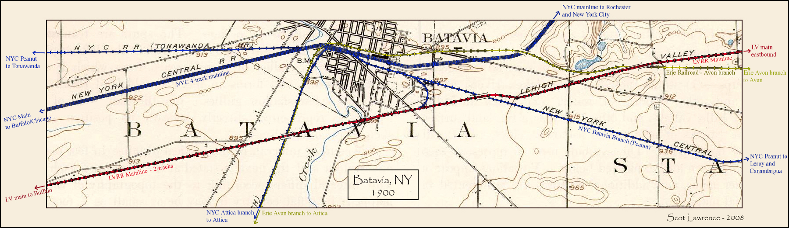

"Mouse over" the Batavia, NY map below to toggle between 1900 and 2008! 
Batavia 1900 base map from: Maptech Historical topo maps. Batavia 2008 base map from: Microsoft Virtual Earth
Return to the Scot's page